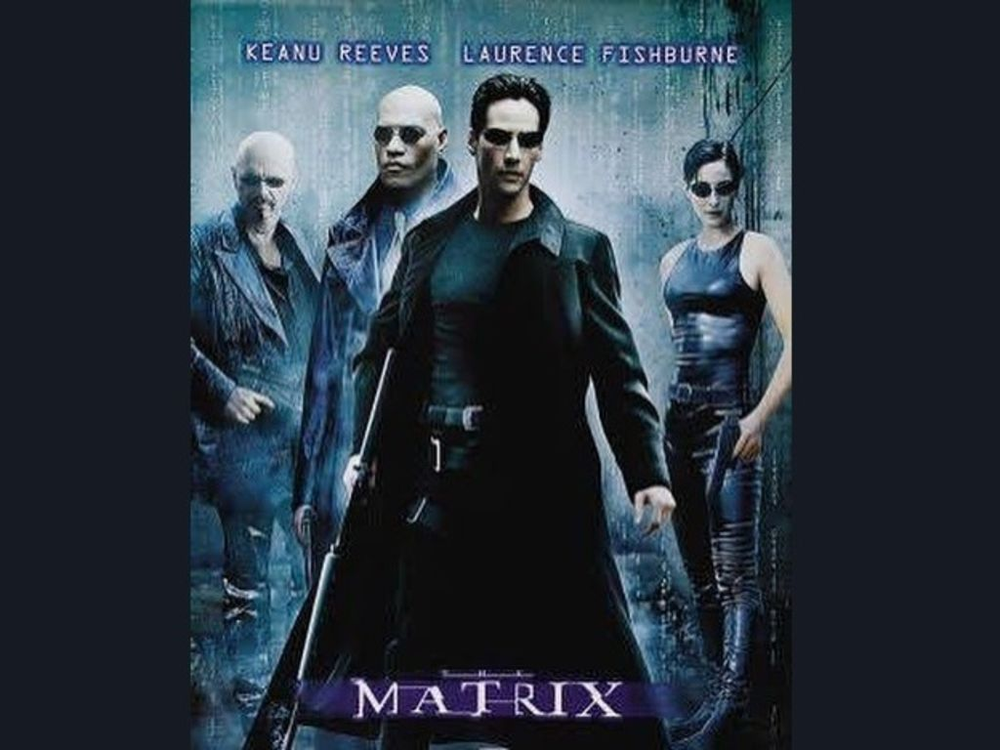
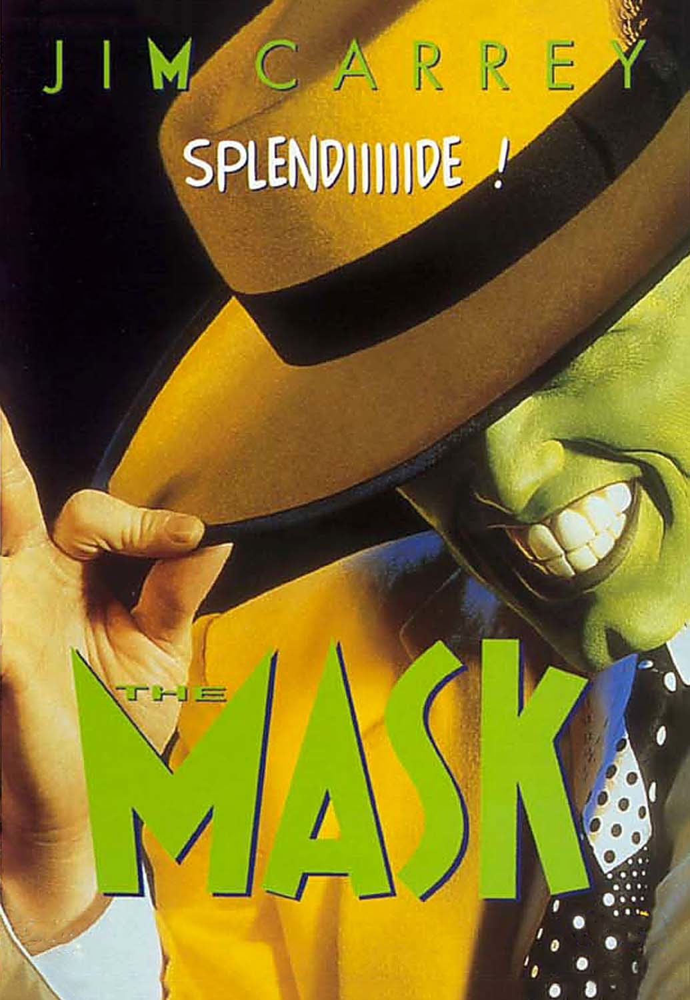
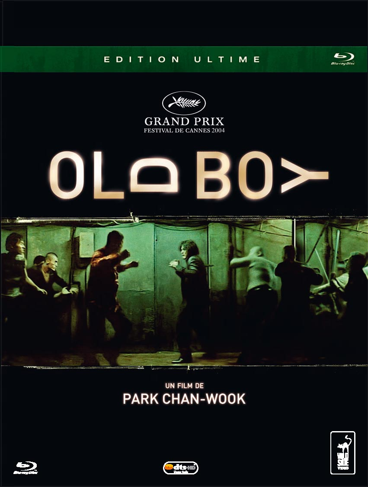

After almost 10 years in communication services, I would like to work closer to the technical teams. My goal: Product manager in a talented company.
I am currently intended @leWagon. More infos|  |
MatrixComputer programmer Thomas Anderson, living a double life as the hacker "Neo", feels something is wrong with the world and is puzzled by repeated online encounters with the cryptic phrase "the Matrix". |
|  |
The MaskStanley finds a wooden mask near the city's harbor. Placing it on his face transforms him into a green-faced, zoot-suited, bizarre, wisecracking trickster known as the Mask, who is able to cartoonishly alter himself and his surroundings at will. |
|  |
Old boyDae-su is kidnapped, and wakes up in a sealed hotel room where food is delivered through a trap-door. By watching the television, Dae-su learns that his wife has been murdered and that he is the prime suspect. |